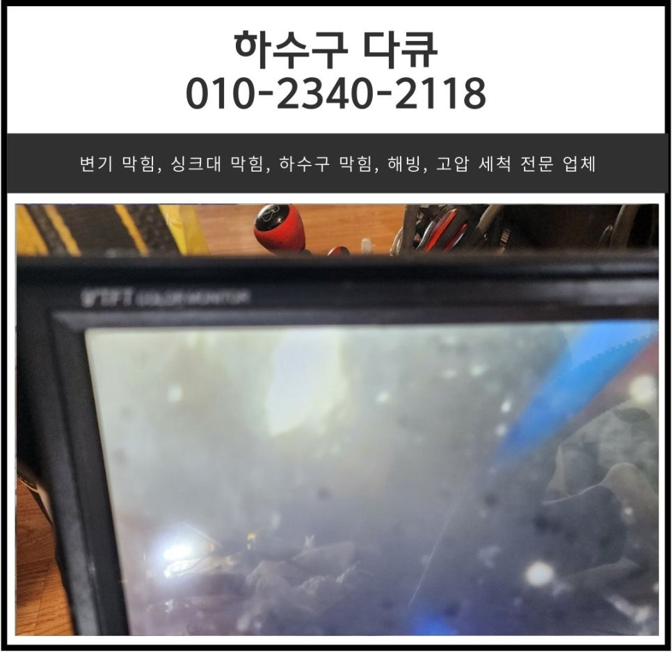
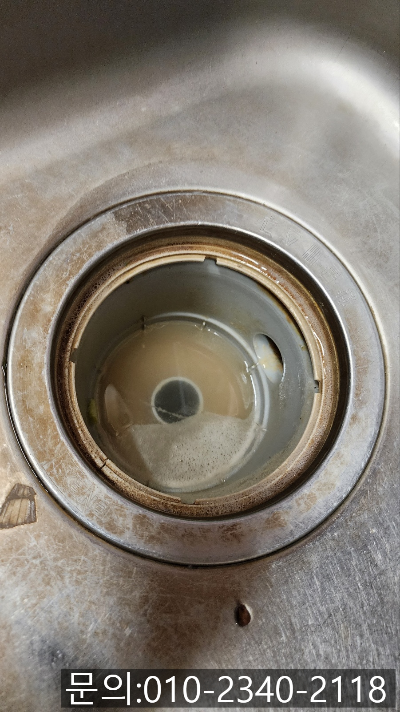
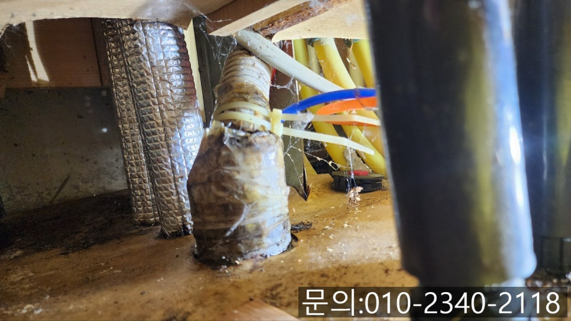
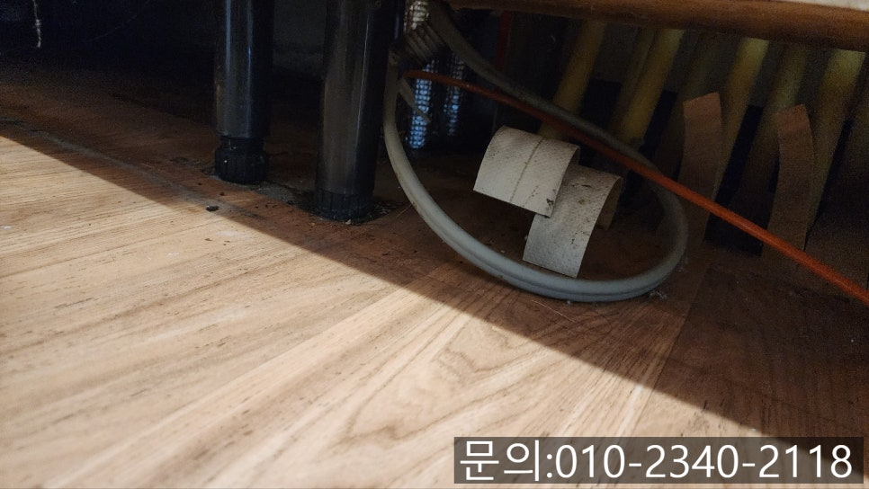
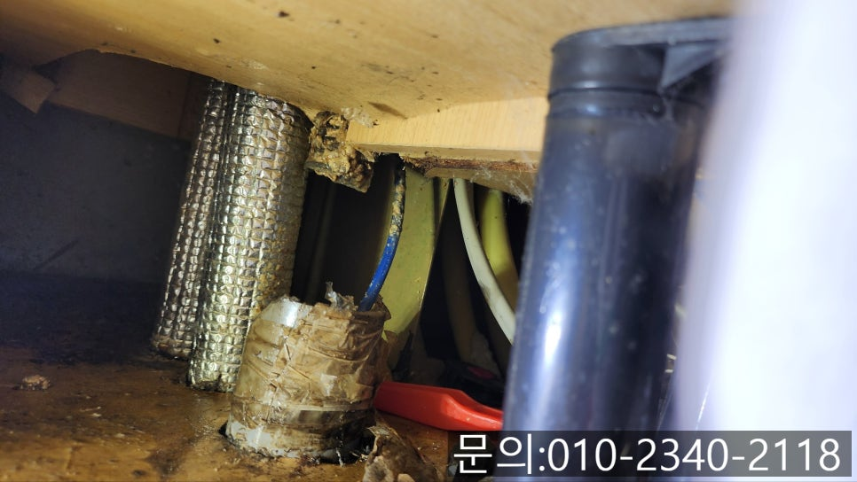
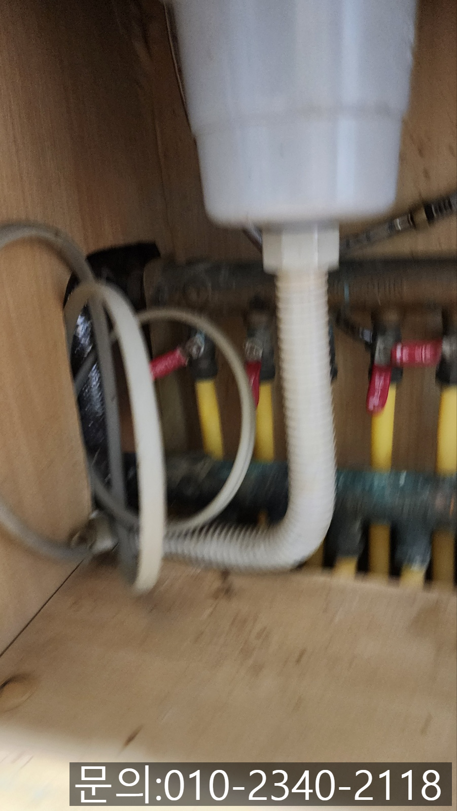
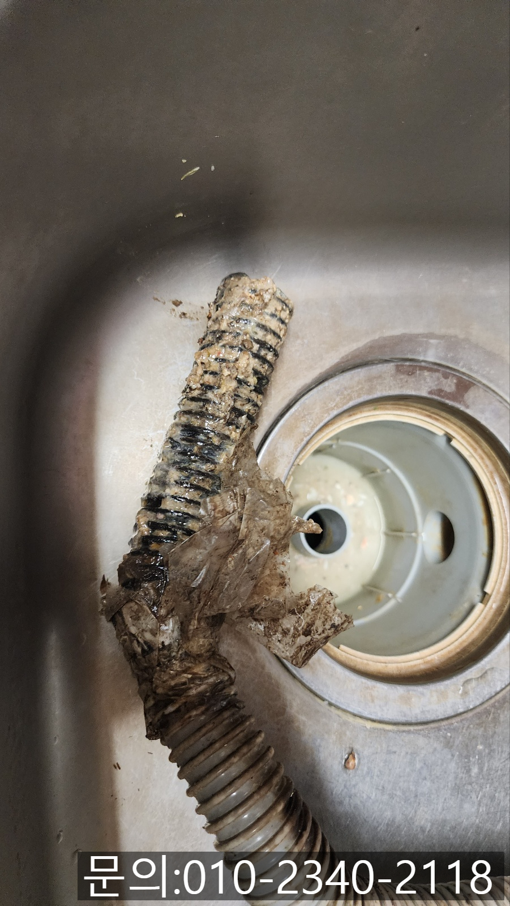

🏠 두곡동 싱크대 막힘 오산 청호동 하수구 배관 역류 전문 업체
오산 싱크대막힘 전문 시공 후기

📋 작업 개요
- 위치: 오산
- 서비스 유형: 싱크대막힘, 하수구막힘, 배관막힘, 누수수리, 역류해결, 뚫는업체, 배관청소
- 작업 일시: 2025. 4. 2. 9:20
- 업체명: 하수구수사대 (010-5615-2118)
🔍 문제 상황
안녕하세요.
두곡동 싱크대 막힘, 오산 청호동 하수구 배관 역류 전문 업체 하수구 다큐입니다.
두곡동 싱크대 막힘은 단순하게 뚫으면 될 것 같지만 정확한 원인을 파악하고 전문적인 장비를 이용해 해결해야 안전합니다.
하지만 두곡동 싱크대 막힘이 발생하면 락스를 부어 뚫어보려는 분들이 생각보다 많으시죠!
그런데 두곡동 싱크대 막힘은 자칫 아래층의 천장 누수로 이어질 수 있어 락스를 이용하시기보다는 전문가의 도움을 받아 점검해 보셔야 합니다.
최근 한 아파트에서 싱크대가 막힌 건지 사용한 물이 흘러가지 않는다는 연락을 받고 오산 청호동 하수구 배관 역류 전문 업체 하수구 다큐는 바로 현장으로 달려갔어요.
주방의 싱크대 막힘이 발생하게 되면 살림을 전혀 할 수 없고, 물과 이물질이 올라오면서 하수구 냄새도 심해 집에 있기 힘들어집니다.
하수구 배관에서 역류까지 발생하고 있다면 배관이 꽉 막혔거나 배수 라인에 문제가 있을 확률이 높은데요.

🔎 원인 분석
💡 전문가 진단: 정밀 진단 장비를 사용하여 슬러지의 고착 여부를 판명하고 타격/세척 작업을 실시했습니다.
정확한 원인을 파악하고 조치를 취하는 게 중요합니다.
전화를 받고 신속하게 방문한 현장의 싱크대 모습입니다.
고객님의 전화를 끊고 30분 만에 방문했는데요.
도착했을 땐, 역류했던 물이 빠져나간 상태였습니다.
싱크대와 배관을 연결해 주는 주름 배관을 제거하기 위해 확인해 보니 그동안 악취가 심해 테이프로 감아놓은 상태였어요.
고객님께 여쭤보니 몇 달 전부터 주방에서 기분 나쁜 냄새가 진동해 하수구 문제인 것 같아 테이프로 막아 두셨다고 해요.
테이프를 많이 감아놓으니 조금 괜찮아지긴 했지만 여전히 악취로 불편을 겪고 계셨습니다.
배관 내부에 기름 슬러지와 이물질들이 흘러가지 못하고 썩어가면서 악취도 진동하는 것 같은데요.

🔧 작업 과정
전문적인 장비를 이용해 정확한 원인을 파악해 보겠습니다.
주름 배관을 분리해 보니 악취가 더 심하게 올라왔고요.
하수구에 꽂혀있던 부분에 이물질이 잔뜩 껴 썩어있는 상태였어요.
배관 내부의 모습이 안 봐도 훤하지만 원인을 정확히 파악하지 않고 작업할 순 없죠!!
오산 청호동 하수구 배관 역류 전문 업체 하수구 다큐는 내시경 카메라를 진입시켜 막힘의 원인을 눈으로 확인해 보기로 했어요.
내시경 카메라가 내부로 진입하자 음식물 찌꺼기와 기름 슬러지 등이 배관에 쌓여있는 상태로 물구멍이 보이지 않을 정도로 심각했습니다.
고객님께서도 내시경 카메라로 촬영한 내부를 확인해 보시더니 주방에서 냄새가 날수밖에 없었겠다고 하셨어요.
배관 내부로 잠깐 들어갔다 나온 내시경 카메라인데요.
잠깐 사이에도 많은 이물질이 걸려올라 올 정도였습니다.
고객님께 배관 역류의 원인과 해결하는 방법, 발생되는 비용, 소요시간 등 자세히 설명해 드리고 배관 청소를 진행하기로 했어요.
내시경 카메라로 기름 슬러지를 확인하면서 플렉스 샤프트 장비로 청소 작업을 시작합니다.
플렉스 샤프트 장비는 얇은 노즐을 배관 내부로 진입시켜주고, 본체에 연결되어 있는 전동드릴을 작동시켜주면 배관 내부에서 360도로 회전하면서 붙어 있는 이물질을 떨어트려주거나 딱딱한 이물질은 잘게 부서 주는 역할을 하는데요.


✅ 작업 완료
이때 떨어져 나온 이물질은 석션을 사용해 빨아들여 완벽하게 제거해 주게 됩니다.
몇 년간 쌓인 기름 슬러지의 양이 워낙에 많다 보니 한두 번으로는 해결되지 않아 수차례 반복해서 작업을 진행했어요.
여러 차례 내시경 카메라로 확인하면서 플렉스 샤프트와 석션을 이용해 기름 슬러지를 모두 제거했습니다.
석션 통 반 통을 채울 만큼 많은 양의 기름 슬러지를 제거하자 고객님도 이제 걱정 없이 주방일 할 수 있겠다며 좋아해 주셔서 뿌듯했던 현장입니다.




⚠️ 베란다 누수 및 방수 관리 방법
- ✅ 비가 많이 올 때 창틀 주변이나 아래층 천장에 얼룩이 생기는지 정기적으로 확인해 보세요.
- ✅ 우수관 주변 실리콘 마감이 들뜨거나 깨진 틈새가 있는지 손상 여부를 수시로 체크하세요.
- ✅ 베란다 바닥 타일의 줄눈(메지)이 소실되면 그 틈으로 물이 침투하여 누수가 유발됩니다.
- ✅ 누수 의심 증상 발견 시 방치하면 아래층 손실이 커지므로 즉시 전문가의 진단을 받으십시오.
💡 핵심 정리
- 확실한 장비 작업(내시경 점검 및 샤프트 스케일링)으로 원인을 뿌리 뽑습니다.
- 작업 후 1년 이내에 동일한 부위 재발 시 100% 무상 A/S 서비스를 보장합니다.
- 서울 · 경기 · 인천 전 지역에 24시간 언제든 긴급 출동할 수 있도록 항시 대기 중입니다.
❓ 자주 묻는 질문 (FAQ)
🚨 오산 싱크대막힘 문제로 고민이신가요?
정확한 원인 진단과 확실한 시공으로 재발 없는 해결을 약속드립니다.
24시간 긴급 출동 | 서울 · 경기 · 인천 전지역 | 1년 내 재발 시 무상 A/S